Photo credits
Every photo here is somebody’s work, shared with a license that lets us use it. Each is listed with who took it, the license and a link to the original.
Each photo is shown resized; small copies are cropped to a square or a wide card.
Plants · 129
129 photos, one for each plant that has one. A plant’s own page shows its photo with this same credit.
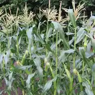
Corn plants growing in a field, with tasselled tops
Photo: Rasbak at Dutch Wikipedia · CC BY-SA 3.0, via Wikimedia Commons.

A bean plant with green pods hanging among the leaves
Photo: Rainer Zenz (uploader), via Wikimedia Commons · CC BY-SA 3.0, via Wikimedia Commons.


A green zucchini growing on the ground among the leaves
Photo: Lmbuga · CC BY-SA 3.0, via Wikimedia Commons.

Butternut squash, whole and halved
Photo: George Chernilevsky · Public domain, via Wikimedia Commons.

A pepper plant bearing red and orange fruit
Photo: PierreSelim · CC BY 3.0, via Wikimedia Commons.

A tomatillo plant carrying husked fruit
Photo: Frank Vincentz · CC BY-SA 3.0, via Wikimedia Commons.
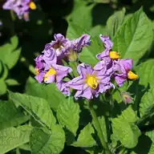
A potato plant in flower, with purple blossoms
Photo: George Chernilevsky · Public domain, via Wikimedia Commons.

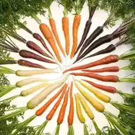
Carrots of many colors arranged in a fan
Photo: Stephen Ausmus · Public domain, via Wikimedia Commons.


A green cabbage head with tight wrapping leaves
Photo: George Chernilevsky · Public domain, via Wikimedia Commons.
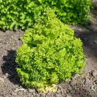
A loose-leaf lettuce growing in garden soil
Photo: DeFacto · CC BY-SA 4.0, via Wikimedia Commons.
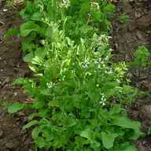
Arugula plants growing as leafy salad greens
Photo: Leo Michels · Public domain, via Wikimedia Commons.
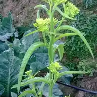


Radicchio heads growing in a bed, red hearts inside green outer leaves
Photo: Goldlocki · CC BY-SA 3.0, via Wikimedia Commons.
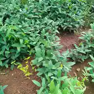


A garlic bulb with a few cloves separated
Photo: Ivar Leidus · CC BY-SA 4.0, via Wikimedia Commons.

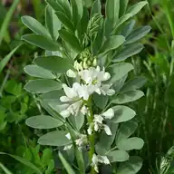
A fava bean plant in flower
Photo: Krzysztof Ziarnek, Kenraiz · CC BY-SA 4.0, via Wikimedia Commons.
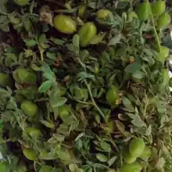
A chickpea plant covered in small green pods
Photo: Nundhaa · CC BY-SA 4.0, via Wikimedia Commons.

A lentil plant in flower, small flat pods among fine leaflets
Photo: Stefan.lefnaer · CC BY-SA 4.0, via Wikimedia Commons.
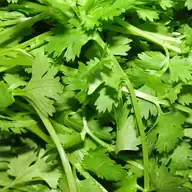
Fresh green cilantro leaves
Photo: Thamizhpparithi Maari · CC BY-SA 3.0, via Wikimedia Commons.
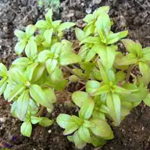
A young summer savory plant, narrow leaves in bright whorls
Photo: Victor M. Vicente Selvas · Public domain, via Wikimedia Commons.

A sweet basil plant with broad green leaves
Photo: PumpkinSky · CC BY-SA 4.0, via Wikimedia Commons.


An amaranth plant with a deep-red flower plume
Photo: SAplants · CC BY-SA 4.0, via Wikimedia Commons.

Red quinoa seed heads ripening in a field
Photo: Bob Ramsak · CC BY-SA 4.0, via Wikimedia Commons.
Sunflowers in bloom against the sky
Photo: Roberta F. · CC BY-SA 3.0, via Wikimedia Commons.

The spidery pink flower of Rocky Mountain bee plant
Photo: Matt Lavin from Bozeman, Montana, USA · CC BY-SA 2.0, via Wikimedia Commons.

Buckwheat plants in flower, clusters of small white blooms
Photo: Afanasovich · CC BY-SA 4.0, via Wikimedia Commons.

A field of ripening rye under a blue sky with white clouds
Photo: Radosław Botev · CC BY-SA 4.0, via Wikimedia Commons.

Hairy vetch in flower, purple blooms along trailing stems
Photo: Agnieszka Kwiecień · CC BY-SA 4.0, via Wikimedia Commons.
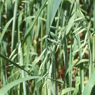
Oat plants in a field, loose seed heads hanging among the leaves
Photo: Sendelbach · CC BY-SA 3.0, via Wikimedia Commons.
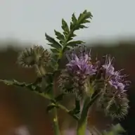
The coiled purple flower of lacy phacelia
Photo: KPFC · CC BY-SA 3.0, via Wikimedia Commons.

Orange calendula flowers on bushy plants in a garden bed
Photo: Flominator · CC BY-SA 3.0, via Wikimedia Commons.

Clusters of small white sweet alyssum flowers
Photo: Robert Flogaus-Faust · CC BY 4.0, via Wikimedia Commons.

A French marigold flower
Photo: George Chernilevsky · Public domain, via Wikimedia Commons.

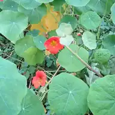
Nasturtium plants with round leaves and orange flowers
Photo: AnRo0002 · CC0 1.0, via Wikimedia Commons.
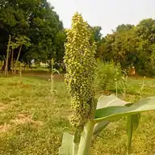


A fennel plant with yellow flower umbels
Photo: Javier martin · Public domain, via Wikimedia Commons.


A long green luffa gourd hanging on its vine among lobed leaves
Photo: Forest and Kim Starr · CC BY 3.0 us, via Wikimedia Commons.

Freshly harvested red beets with their roots and tops
Photo: Frank Schulenburg · CC0, via Wikimedia Commons.

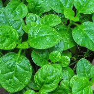
Glossy, rounded Malabar spinach leaves
Photo: Joydeep · CC BY-SA 3.0, via Wikimedia Commons.

New Zealand spinach, a mat of thick, triangular leaves
Photo: Harry Rose · CC BY 2.0, via Wikimedia Commons.

A single leek with a white shaft and green leaves
Photo: Amada44 · CC BY-SA 4.0, via Wikimedia Commons.


Red radishes growing in the soil with their leafy tops
Photo: Schlaghecken Josef · CC BY-SA 4.0, via Wikimedia Commons.
Cantaloupe melons, whole and cut into slices
Photo: USDA photo by Scott Bauer. Image Number K7355-11. · Public domain, via Wikimedia Commons.
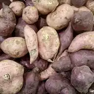
A pile of harvested sweet potato tubers
Photo: Filo gèn' · CC BY-SA 4.0, via Wikimedia Commons.

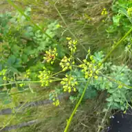

An okra plant with a cream-colored flower
Photo: ADARSHluck · CC BY-SA 4.0, via Wikimedia Commons.

A roselle plant with a pale pink flower and red stems
Photo: Mokkie · CC BY-SA 3.0, via Wikimedia Commons.

A pile of winter squashes and pumpkins
Photo: George Chernilevsky · Public domain, via Wikimedia Commons.

Turnips growing in the ground with their leafy tops
Photo: Miya · CC BY-SA 4.0, via Wikimedia Commons.


Bunches of scallions with white shafts and green tops
Photo: Genmewcaugsa · CC BY-SA 3.0, via Wikimedia Commons.

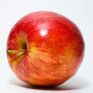
A single ripe red apple
Photo: Abhijit Tembhekar from Mumbai, India · CC BY 2.0, via Wikimedia Commons.

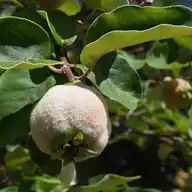
A young quince, pale and downy, on the branch
Photo: Topi Pigula · CC BY-SA 4.0, via Wikimedia Commons.
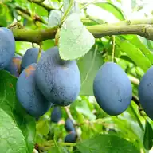
Purple plums ripening on the branch
Photo: Jonathan Billinger · CC BY-SA 2.0, via Wikimedia Commons.


A peach, whole and halved to show the pit
Photo: Jack Dykinga, USDA · Public domain, via Wikimedia Commons.
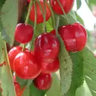

Dark red cherries hanging in clusters among the leaves of a cherry tree
Photo: MPF · CC BY 2.5, via Wikimedia Commons.

A branch of an apricot tree bearing orange fruit against a blue sky
Photo: Zeynel Cebeci · CC BY-SA 4.0, via Wikimedia Commons.
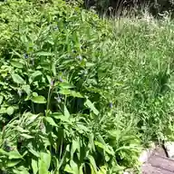
A stand of Russian comfrey foliage
Photo: Evelyn Simak · CC BY-SA 2.0, via Wikimedia Commons.


A field of crimson clover in bloom
Photo: Nefronus · CC BY-SA 4.0, via Wikimedia Commons.

Wild lupine with blue flower spikes
Photo: cassi saari · CC BY-SA 4.0, via Wikimedia Commons.
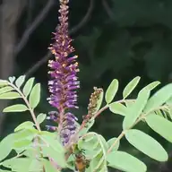
False indigo bush with a purple flower spike
Photo: Dalgial · CC BY-SA 3.0, via Wikimedia Commons.
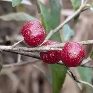
Red speckled autumn olive berries on the branch
Photo: Alpsdake · CC BY-SA 4.0, via Wikimedia Commons.
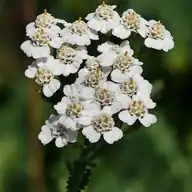
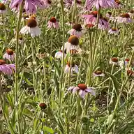
A field of purple coneflowers, pink petals drooping from raised cones
Photo: Burkhard Mücke · CC BY-SA 4.0, via Wikimedia Commons.


A purple-and-white striped crocus flower, open, with an orange center
Photo: Ermell · CC BY-SA 4.0, via Wikimedia Commons.
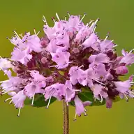
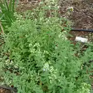
A marjoram plant in flower, small white blooms on upright stems
Photo: Forest & Kim Starr · CC BY 3.0, via Wikimedia Commons.


A rosemary plant with needle leaves and blue flowers
Photo: THOR · CC BY 2.0, via Wikimedia Commons.
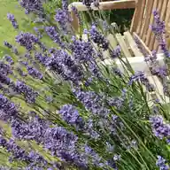
Lavender in bloom, purple flower spikes above gray-green leaves
Photo: Kolforn · CC BY-SA 4.0, via Wikimedia Commons.
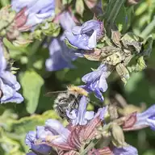

A tarragon plant with slender green leaves
Photo: Agnieszka Kwiecień · CC BY-SA 4.0, via Wikimedia Commons.

The lush green leaves of a spearmint plant
Photo: Commonists · CC BY-SA 4.0, via Wikimedia Commons.

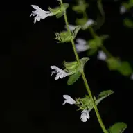
A lemon balm plant with small white flowers
Photo: Gideon Pisanty ( Gidip ) גדעון פיזנטי · CC BY 3.0, via Wikimedia Commons.

White chamomile flowers with yellow centers among fine leaves
Photo: Petruss · CC BY-SA 3.0, via Wikimedia Commons.

Lovage leaves, glossy and deeply cut, in front of a wooden fence
Photo: 4028mdk09 · CC BY-SA 3.0, via Wikimedia Commons.
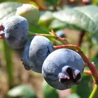
Blueberries ripening on the bush
Photo: Darkone ( talk · contribs ) · CC BY-SA 2.5, via Wikimedia Commons.


A rhubarb plant with large leaves and red stalks
Photo: DeFacto · CC BY-SA 4.0, via Wikimedia Commons.

A globe artichoke head on its stalk above gray-green leaves
Photo: Derek Ramsey (Ram-Man), with the Chanticleer Garden · CC BY-SA 3.0, via Wikimedia Commons.

Sorrel leaves, shield-shaped and green
Photo: Jerzy Opioła · CC BY-SA 4.0, via Wikimedia Commons.
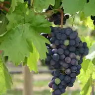

A cream-white hardy kiwi flower on its vine
Photo: Schurdl · CC BY-SA 4.0, via Wikimedia Commons.
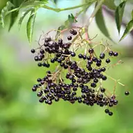
A hanging cluster of dark purple elderberries among green leaves
Photo: Rison Thumboor · CC BY-SA 4.0, via Wikimedia Commons.
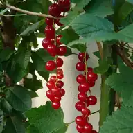

Orange persimmons on a bare branch among yellow fall leaves
Photo: Ryan Watson · CC BY 4.0, via Wikimedia Commons.

Ripe and ripening mulberries, black, red and pink, on a leafy branch
Photo: Famartin · CC BY-SA 4.0, via Wikimedia Commons.
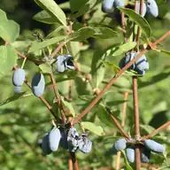
Long blue honeyberries hanging along a leafy branch
Photo: Oleg Kosterin · CC BY 4.0, via Wikimedia Commons.
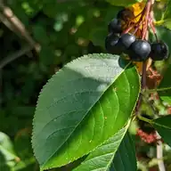
A cluster of black chokeberries above glossy green leaves
Photo: Michel Langeveld · CC BY-SA 4.0, via Wikimedia Commons.
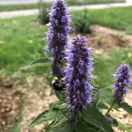
Purple anise hyssop flower spikes above toothed leaves, a bumblebee on one
Photo: Guettarda · CC BY-SA 4.0, via Wikimedia Commons.
A fig cut in half, showing its red interior
Photo: Ivar Leidus · CC BY-SA 4.0, via Wikimedia Commons.

A pomegranate shrub with young fruit among small green leaves
Photo: Juan Emilio Prades Bel · CC BY-SA 4.0, via Wikimedia Commons.

Feijoa flowers with white petals and bright red stamens
Photo: Sergei Kazantsev · CC BY-SA 4.0, via Wikimedia Commons.

Green olives ripening on a branch among narrow leaves
Photo: Forest and Kim Starr · CC BY 3.0 us, via Wikimedia Commons.

Fuzzy brown kiwifruit hanging from a vine against a blue sky
Photo: Mike Finn · CC BY 2.0, via Wikimedia Commons.

Unripe green lemons on a lemon tree among glossy leaves
Photo: Commonists · CC BY-SA 4.0, via Wikimedia Commons.

Oranges ripening in the top of an orange tree against a blue sky
Photo: Luis Fernández García · CC BY-SA 2.5 es, via Wikimedia Commons.
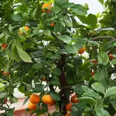
A mandarin tree with orange fruit among dark green leaves
Photo: Agnieszka Kwiecień, Nova · CC BY-SA 4.0, via Wikimedia Commons.
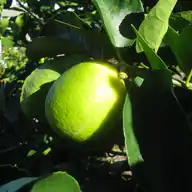
A green lime hanging among glossy leaves
Photo: Forest and Kim Starr · CC BY 3.0 us, via Wikimedia Commons.

A green avocado hanging from its tree among large leaves
Photo: Treysam · CC BY-SA 4.0, via Wikimedia Commons.
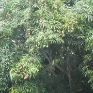
A mango tree hung with young green fruit
Photo: Veronidae · CC BY-SA 3.0, via Wikimedia Commons.

A clump of banana plants with broad leaves under a blue sky
Photo: Forest & Kim Starr · CC BY 3.0, via Wikimedia Commons.
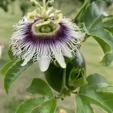
A passionfruit flower with a purple and white fringe on its vine
Photo: Heydew · CC BY-SA 4.0, via Wikimedia Commons.


.jpg){kind=link}
,_Trimingham,_Norfolk.JPG){kind=link}


.JPG){kind=link}

.jpg){kind=link}


.jpg){kind=link}


_01.jpg){kind=link}


.jpg){kind=link}


.jpg){kind=link}

.jpg){kind=link}


_Feb_2019._DSC_0060_01.jpg){kind=link}
_2.jpg){kind=link}


.jpg){kind=link}


_-_plod.jpg){kind=link}

.jpg){kind=link}
.jpg){kind=link}
_single2.jpg){kind=link}


_in_flower_-_geograph.org.uk_-_6477153.jpg){kind=link}


.jpg){kind=link}
.jpg){kind=link}


,_Trimingham,_Norfolk.JPG){kind=link}


.jpg){kind=link}
.jpg){kind=link}


.jpg){kind=link}


1.jpg){kind=link}


_fruit_halved.jpg){kind=link}


.jpg){kind=link}
.jpg){kind=link}


.jpg){kind=link}


Gardens and garden work · 88
88 photos of gardens, garden jobs and plants at work: the pictures that open pages, sit beside the guides, give a plant’s page a second look and show a plant team growing.
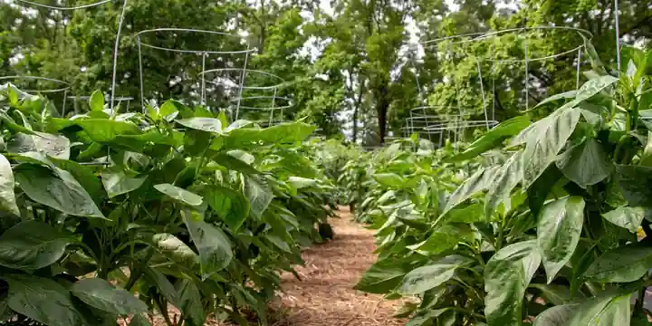
A vegetable garden of long planted rows in open ground, seen across the beds
Photo: Mary O'Neill · Public domain, via Wikimedia Commons.
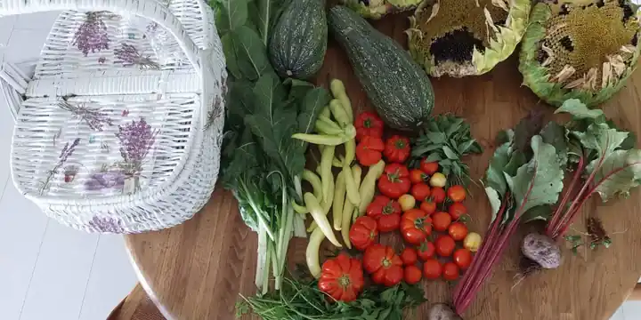
A late-summer garden harvest arranged on a round wooden table — courgettes, ripe tomatoes, pale peppers, beetroot with its leaves, herbs and cut sunflower heads beside a white wicker basket
Photo: SA, The Green Ark- Bostanie · CC BY 4.0, via Wikimedia Commons.
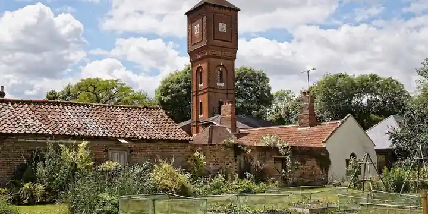
Square vegetable beds under low crop-protection cages in a walled kitchen garden, a Victorian brick water tower rising behind the wall
Photo: Acabashi · CC BY-SA 4.0, via Wikimedia Commons.
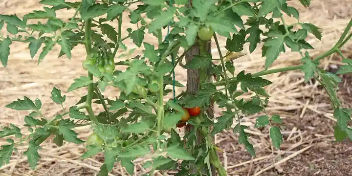
A staked tomato plant in a garden bed, clusters of small fruit ripening from green through orange to red among the leaves, the ground mulched with straw
Photo: NPS · Public domain, via Wikimedia Commons.

Allotment vegetable plots in a public park, small mixed beds and a young tree behind a low wooden fence, apartment blocks rising beyond the trees under a bright summer sky
Photo: Ciara Ní Riain · CC BY-SA 4.0, via Wikimedia Commons.

A bumblebee feeding at a dense cluster of pink swamp-milkweed flowers, its wings folded back, a small ant among the blooms
Photo: U.S. Department of Agriculture Lance Cheung/Multimedia PhotoJournalist · Public domain, via Wikimedia Commons.

A wooden teepee covered in flowering scarlet runner beans, hand-lettered plant markers and straw-mulched beds around it
Photo: NPS · Public domain, via Wikimedia Commons.

An open cold frame full of seedling trays beside a lean-to greenhouse and pots of tulips, against a stone garden wall
Photo: Oliver Dixon · CC BY-SA 2.0, via Wikimedia Commons.

Fresh green garden waste - grass clippings, leaves and pruned stems - heaped inside a plastic compost bin, seen from above
Photo: Ksd5 · CC0, via Wikimedia Commons.

A field of tall tasseling corn beside a country lane, mountain ridges rising behind under a summer sky
Photo: Paranoid · Public domain, via Wikimedia Commons.

A field sown to a green winter cover crop, seen over a bare hawthorn hedge under moving clouds
Photo: Jonathan Billinger · CC BY-SA 2.0, via Wikimedia Commons.

Rows of young plants in a nursery, each row threaded with looping black drip-irrigation line
Photo: Borisshin · CC BY-SA 4.0, via Wikimedia Commons.
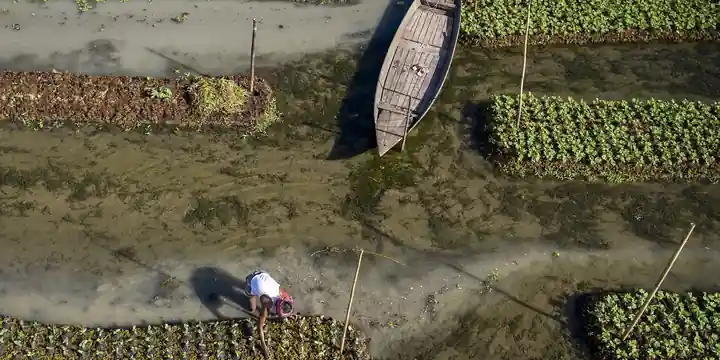
Floating seedbed rafts on a river seen from above, a farmer bending to tend one and a wooden boat moored alongside
Photo: Azimronnie · CC BY-SA 4.0, via Wikimedia Commons.

A low green leaf completely crusted in white frost crystals, frosted grass and gravel around it
Photo: Syrio · CC BY-SA 4.0, via Wikimedia Commons.
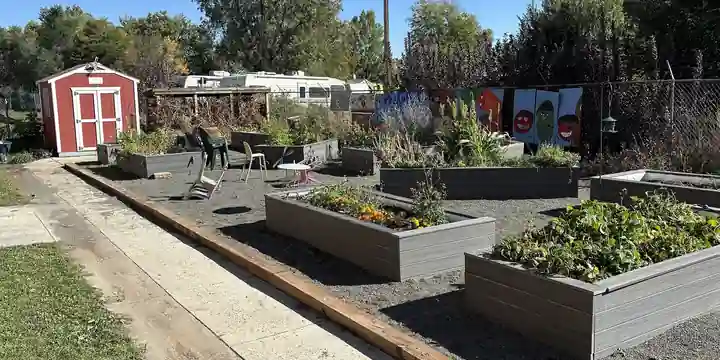
Gray raised beds of flowers, beans and herbs on gravel paths in a community garden, a red shed and a painted mural fence behind
Photo: Mikepascoe · CC0, via Wikimedia Commons.

A digging fork and a well-worn spade resting side by side on clover-studded grass
Photo: Erich Ferdinand · CC BY 2.0, via Wikimedia Commons.
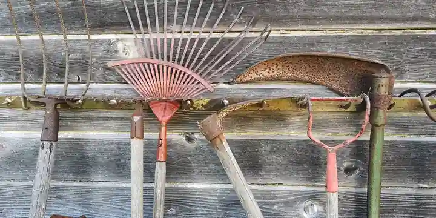
Old garden tools - a pitchfork, fan rakes, a scythe blade and hoes - hung in a row on a weathered wooden wall
Photo: Dereckson · CC BY 4.0, via Wikimedia Commons.
A small glasshouse packed with tomato and squash plants, a vine spilling out of the open roof vent
Photo: W.carter · CC0, via Wikimedia Commons.

Two women bending to sow seed by hand across a red-earth field, a straw stack on the horizon
Photo: Vraj Acharya, WELL Labs · CC BY-SA 4.0, via Wikimedia Commons.
Four tall woven baskets heaped with red and orange tomatoes at a market, produce sacks stacked behind
Photo: Friday musa · CC BY-SA 4.0, via Wikimedia Commons.

A monastery kitchen garden of edged vegetable and flower beds beneath a red fortress wall with a wooden-roofed tower
Photo: Perituss · CC0, via Wikimedia Commons.
A loose-leaf lettuce at full size, its crinkled leaves beaded with rain, more greens crowding in around it
Photo: GT1976 · CC BY-SA 4.0, via Wikimedia Commons.

A field of yellow marigolds in full bloom beneath a stand of coconut palms under a clear blue sky
Photo: Ezhuttukari · CC BY-SA 3.0, via Wikimedia Commons.

A garden of straw-mulched beds and a row of leeks in open grass, a spare straw bale waiting at the edge
Photo: Final4one · CC BY-SA 3.0, via Wikimedia Commons.

A glossy red bell pepper and a green one ripening side by side among sunlit leaves
Photo: Rob Bertholf · CC BY 3.0, via Wikimedia Commons.
Orange and yellow pumpkins scattered across a picked-over field under a heavy storm sky, dry corn standing at the edge
Photo: Michael Barera · CC BY-SA 4.0, via Wikimedia Commons.

A heap of freshly pulled carrots with their tops still on, harvesters working the green rows behind
Photo: Chad Skeers · CC BY 2.0, via Wikimedia Commons.
A tiny seedling breaking the surface between grains of coarse grit, its stem still bent from the seed
Photo: Frederick Depuydt · CC BY-SA 4.0, via Wikimedia Commons.

A gardener in a bucket hat working the soil with a hoe inside a hooped raised bed, a leek marker at the rail and city buildings behind
Photo: USDAgov · Public domain, via Wikimedia Commons.

A fenced garden of planted straw bales - lettuces, kohlrabi and squash growing from pockets of compost in the bales - on wood-chip paths
Photo: Colling-architektur · CC BY-SA 3.0, via Wikimedia Commons.

A weathered wheelbarrow heaped with fresh grass clippings, a mower and gardener crossing the lawn behind
Photo: Shixart1985 · CC BY 2.0, via Wikimedia Commons.
Ripening gooseberries hanging from the branch of a garden bush, translucent yellow-green fruit against the leaves
Photo: Pavel Leman · CC BY-SA 3.0, via Wikimedia Commons.

Gooseberry bushes heavy with red fruit growing in an open field under a blue sky
Photo: Lis Burke · CC BY-SA 2.0, via Wikimedia Commons.
A heap of freshly picked yellow-green gooseberries, stems and blossom tails still attached
Photo: neurovelho · CC BY-SA 3.0, via Wikimedia Commons.

Red currants and pale gooseberries piled together on a plate in low sunlight
Photo: dailyfood · CC BY 2.0, via Wikimedia Commons.
Curly kale and heading cabbages filling a run of timber raised beds inside a split-rail fence
Photo: Alabama Extension · CC0, via Wikimedia Commons.

A dense stand of cutting celery beside rows of savoy cabbage along a brick garden wall
Photo: cultivar413 from Fallbrook, California · CC BY 2.0, via Wikimedia Commons.
An ornamental vegetable border of red cabbages, peppers, basil and herbs backed by a wall of sunflowers
Photo: cultivar413 · CC BY 2.0, via Wikimedia Commons.

Potato plants growing in a deep wooden planter box on a paved yard, pots and a small plastic greenhouse alongside
Photo: Claire Pearcy · CC BY-SA 4.0, via Wikimedia Commons.
A self-watering grow box planted with tomatoes, lettuce and herbs at the foot of wooden porch steps
Photo: Bturner · CC BY-SA 3.0, via Wikimedia Commons.

A straight path between box-edged vegetable beds in an old walled kitchen garden, a young tree at its center
Photo: Christian David · CC BY-SA 4.0, via Wikimedia Commons.

A bark-mulch path running under a rusted iron arch between box-edged potager beds of young vegetables
Photo: Billy McCrorie · CC BY-SA 2.0, via Wikimedia Commons.
Painted timber obelisks and terracotta pots flanking a mulched path through low box-edged beds
Photo: Billy McCrorie · CC BY-SA 2.0, via Wikimedia Commons.

Timber-edged raised herb beds with painted plant labels, purple sage in the foreground and lovage behind
Photo: Michael Garlick · CC BY-SA 2.0, via Wikimedia Commons.
A parterre of herbs between clipped box hedges, twin ribbons of golden thyme beside chives in full purple flower
Photo: Michael Garlick · CC BY-SA 2.0, via Wikimedia Commons.
Raised herb and vegetable beds along a gravel path in a brick-walled garden, visitors among the borders
Photo: Michael Garlick · CC BY-SA 2.0, via Wikimedia Commons.
An ornate lead rainwater cistern dated 1733 collecting from a downpipe against a brick and timber house, ferns at its foot
Photo: Michael Garlick · CC BY-SA 2.0, via Wikimedia Commons.

A wooden barrel water butt by the greenhouse door of a hedged kitchen garden
Photo: Rowan Adams · CC BY-SA 4.0, via Wikimedia Commons.
Cucumber seedlings at the seed-leaf stage crowding a plug tray, open ground behind them
Photo: Pascal Kings · CC BY 4.0, via Wikimedia Commons.
Young seedlings with their first true leaves rising from the deep cells of a plug tray
Photo: Pascal Kings · CC BY 4.0, via Wikimedia Commons.

Plug trays of young seedlings seen from above, one seedling to a cell
Photo: Pascal Kings · CC BY 4.0, via Wikimedia Commons.

A squash vine sprawling across its raised bed and climbing the garden fence behind, leaves shading the whole corner
Photo: Vdubs1 · CC BY-SA 4.0, via Wikimedia Commons.
Yellow squash blossoms among spiny leaf stems over a straw mulch
Photo: Mary O'Neill · Public domain, via Wikimedia Commons.
A zucchini plant low to the ground, an orange flower open and a dark fruit swelling beneath the leaf stems
Photo: USDA NRCS Texas · Public domain, via Wikimedia Commons.

Allotment plots resting under a gray winter sky, wheelbarrows and pallet compost bins lined up by a copper beech hedge
Photo: John Sutton · CC BY-SA 2.0, via Wikimedia Commons.
A scarecrow keeping watch over winter allotment beds of young greens and leeks, a red shed behind
Photo: Mary Gracie · CC BY-SA 2.0, via Wikimedia Commons.
Winter allotments in low sun, a small greenhouse and blue water barrel among bare fruit bushes, brick houses behind
Photo: Sebastian Ballard · CC BY-SA 2.0, via Wikimedia Commons.
A gloved hand setting a young tomato plant into a hole in dry, crumbly garden soil
Photo: Shixart1985 · CC BY 2.0, via Wikimedia Commons.

Timber raised beds of peas, onions, sweetcorn and squash along a grass path, bean poles and a greenhouse behind
Photo: Kolforn · CC BY-SA 4.0, via Wikimedia Commons.

Two seed trays freshly sown with tomato and pepper, on a desk indoors
Photo: Furkan Akkurt · CC BY-SA 4.0, via Wikimedia Commons.

A white raspberry flower among the cane's leaves
Photo: Inhemska trädgården · CC BY-SA 4.0, via Wikimedia Commons.

Small yellow flowers on a tomato plant
Photo: Felagund · CC BY-SA 3.0, via Wikimedia Commons.

Young ears of corn with their silks on the stalk
Photo: JFVelasquez Floro · CC0, via Wikimedia Commons.

A white flower on a pepper plant
Photo: Bst9jkj · CC0, via Wikimedia Commons.

A heap of freshly dug potatoes at the edge of a field
Photo: Donald Trung Quoc Don · CC BY-SA 4.0, via Wikimedia Commons.
A gooseberry ripening on the bush among its lobed leaves
Photo: Dirk Ingo Franke · CC BY-SA 3.0, via Wikimedia Commons.

Rows of young cabbages filling a field
Photo: Philip Halling · CC BY-SA 2.0, via Wikimedia Commons.
An onion bulb swelling at the soil line under its green tops
Photo: Kolforn · CC BY-SA 4.0, via Wikimedia Commons.

A bush bean plant in flower, with small purple blossoms
Photo: Kolforn · CC BY-SA 4.0, via Wikimedia Commons.

A cucumber vine tied to its support, with a yellow flower
Photo: Versions111 · CC BY 4.0, via Wikimedia Commons.
Fava pods split open to show the beans inside
Photo: Kolforn · CC BY-SA 4.0, via Wikimedia Commons.
Grapevines trained along wires in long vineyard rows
Photo: MendozaGuide · CC BY 4.0, via Wikimedia Commons.

White pea flowers among the vines' tendrils
Photo: M J Richardson · CC BY-SA 2.0, via Wikimedia Commons.
A rhubarb flower bud breaking open on its stalk
Photo: Olivier · CC BY 2.0, via Wikimedia Commons.
A yellow zucchini flower open above the fruit and leaves
Photo: net_efekt from Oxford, UK · CC BY 2.0, via Wikimedia Commons.

A lettuce seedling's first two leaves, still wearing the seed coat
Photo: Krzysztof Ziarnek, Kenraiz · CC BY-SA 4.0, via Wikimedia Commons.

Corn rising from a mulched mound, with beans and squash at its foot
Photo: Spencer-Nägy · CC BY-SA 4.0, via Wikimedia Commons.

A milpa in Oaxaca: corn standing over squash and beans
Photo: Paul Rogé · CC BY 4.0, via Wikimedia Commons.

A man picking blackberries from a tall bramble hedge
Photo: Acabashi · CC BY-SA 4.0, via Wikimedia Commons.

Bunches of grapes hanging from vines trained over an arbor
Photo: Chris Booth · CC BY-SA 2.0, via Wikimedia Commons.
A tractor rolling down a rye and hairy vetch cover crop in spring
Photo: Mr.1032 · CC BY-SA 4.0, via Wikimedia Commons.
Ducks swimming between young rice plants in a flooded paddy
Photo: bertconcepts · CC BY 2.0, via Wikimedia Commons.
Vegetables growing on a chinampa beside a canal in Tláhuac, Mexico City
Photo: AlejandroLinaresGarcia · CC BY-SA 3.0, via Wikimedia Commons.

A strip of chamomile and cornflowers along a field's edge
Photo: Sebastian Wallroth · Public domain, via Wikimedia Commons.

A raised bed planted with neat rows of lettuces, salad leaves and radishes in rich dark soil
Photo: Acabashi · CC BY-SA 4.0, via Wikimedia Commons.

An established Three Sisters bed - corn tasseling with squash flowering and sprawling below, inside a fenced garden
Photo: Myotus · CC BY-SA 4.0, via Wikimedia Commons.
.jpg){kind=link}


.JPG){kind=link}

.jpg){kind=link}
.JPG){kind=link}


.jpg){kind=link}


_Lactuca_sativa_(garden_lettuce)_at_Bichlh%C3%A4usl_in_Frankenfels,_Austria.jpg){kind=link}


.jpeg){kind=link}
.jpg){kind=link}
.jpg){kind=link}

.jpg){kind=link}


.jpg){kind=link}
.jpg){kind=link}
.jpg){kind=link}


.jpg){kind=link}


.jpg){kind=link}
.jpg){kind=link}


.JPG){kind=link}


_03.jpg){kind=link}


,_Trimingham,_Norfolk.JPG){kind=link}